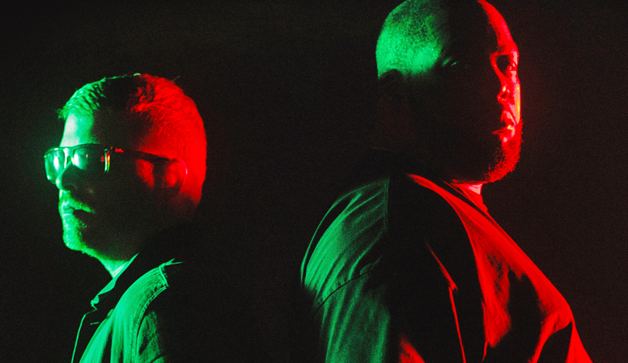

<figure>
	
	<figcaption>The foundation of great design lies in properly understanding who we’re creating for. Typically, the first month of our engagement is spent gathering information about your business and users through quantitative and qualitative data. We use this information to create an objective and identify metrics to measure our progress.</figcaption>
</figure>